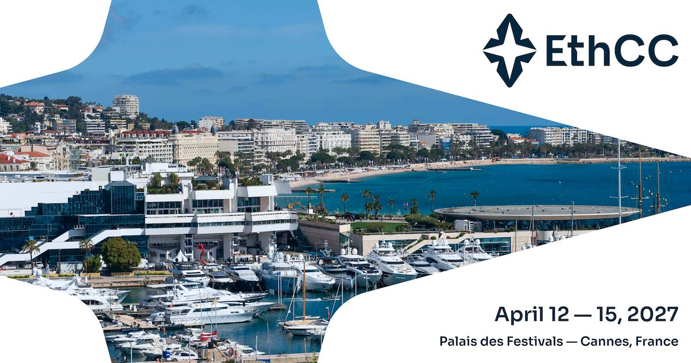

Conferences · Crypto / Web3
EthCC[10] 2027
- Dates
- –
- Venue
- Palais des Festivals et des Congrès, 1 Boulevard de la Croisette, 06400 Cannes
- Location
- Cannes, France
- Format
- In-person
- Category
- Crypto / Web3
- Industry
- Crypto
- Organiser
- Ethereum France
- Price
- Full Pass currently 590 € incl. VAT (Wave 2, 16 Oct 2026–31 Jan 2027). Later waves: Late Pass 750 € (1 Feb–29 Mar 2027); Last Call 990 € (30 Mar–15 Apr 2027). Day Pass 200 € in Wave 3 and 320 € in Wave 4. Wave 1 Early Bird 390 € is sold out. Prices as published on ethcc.io, 23 Nov 2026.
- Expected attendance
- 8,000
- Official website
- https://ethcc.io/
About
Dates are local to the host city (Central European Time, UTC+1 / UTC+2 in summer).
Topics: Ethereum, DeFi, Web3.
Official EthCC site (already recorded as “8000+”, re-checked 24 Nov 2026). Stored as 8,000 (organiser minimum).
Sources
- Official — https://ethcc.io/
Hotels
- Five Seas Hôtel Cannes — 5★ · 22 rue du Bivouac Napoléon, 06400 Cannes, France · 0.2 km from the venue · Price on request
- Hôtel Barrière Le Majestic — 5★ · 10 Boulevard de la Croisette, 06400 Cannes, France · 0.2 km from the venue · Price on request
- Mondrian Cannes — 5★ · 45 Boulevard de La Croisette, 06400 Cannes, France · 0.5 km from the venue · Price on request
- JW Marriott Cannes — 5★ · 50 boulevard de la Croisette, 06400 Cannes, France · 0.6 km from the venue · Price on request
- Carlton Cannes, a Regent Hotel — 5★ · 58 boulevard de La Croisette, 06400 Cannes, France · 0.8 km from the venue · Price on request
- Hôtel Belle Plage — 5★ · 2 rue Brougham, 06400 Cannes, France · 0.8 km from the venue · Price on request
- Hôtel Splendid Cannes — 4★ · 4 rue Félix Faure, 06400 Cannes, France · 0.2 km from the venue · Price on request
- Hôtel America Cannes — 4★ · 16 Rue Notre Dame, 06400 Cannes, France · 0.2 km from the venue · Price on request
- Best Western Hôtel Univers Cannes — 4★ · 2 rue Maréchal Foch, 06400 Cannes, France · 0.2 km from the venue · Price on request
- Hôtel Barrière Gray d'Albion — 4★ · 38 rue des Serbes, 06400 Cannes, France · 0.3 km from the venue · Price on request
Venue
- Palais des Festivals et des Congrès de Cannes — Congress centre · 1 Boulevard de la Croisette, 06400 Cannes